Espiritos de Black Myth: Wukong
Os Espíritos dos inimigos podem ser usados como habilidades em Black Myth: Wukong . Ao obter Espíritos de vários inimigos, o Escolhido pode usar Habilidades Espirituais quando sua energia estiver completa,
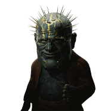
Espírito Errante
Efeito: Aumenta consideravelmente a Defesa.
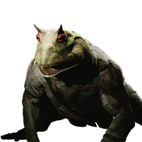
Baw-Li-Guhh-Lang
Efeito: Reduz moderadamente o custo de Vigor para Saltos e Ataques em Salto.
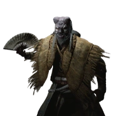
Guangmou
Efeito: Aumenta moderadamente o dano de veneno e a resistência a veneno.
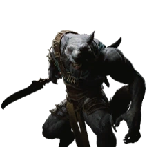
Assassino Lobo
Efeito: Aumenta ligeiramente a chance de acerto crítico (+4%).
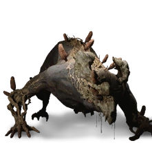
Lobo Terrestre
Efeito: Concede uma pequena quantidade de Foco adicional ao acertar.
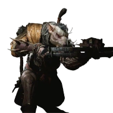
Arqueiro Rato
Efeito: Reduz moderadamente o custo de resistência para o giro do bastão.
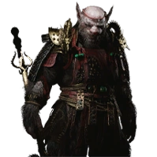
Segundo Príncipe Rato
Efeito: Aumenta moderadamente o Ataque quando a Saúde está baixa.
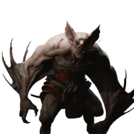
Morcego Ágil
Efeito: Aumenta moderadamente a recuperação de resistência.
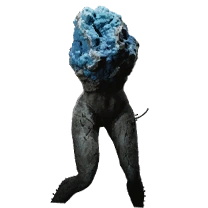
Pedra-Veneno
Efeito: Aumenta moderadamente o dano dos ataques leves em salto e reduz o custo de resistência ao correr.
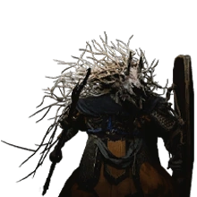
Osso-Lança
Efeito: Aumenta a Redução de Dano (+1%).
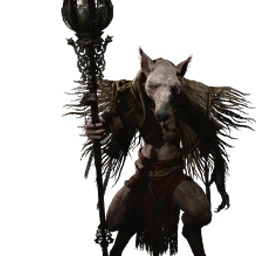
Governador Rato
Efeito: Aumenta moderadamente o dano de trovão.
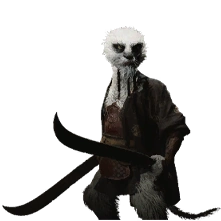
Sargento Civeta
Efeito: Aumenta ligeiramente o Ataque.
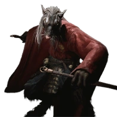
Guarda Imperial Rato
Efeito: Aumenta moderadamente o foco concedido por esquivas perfeitas.
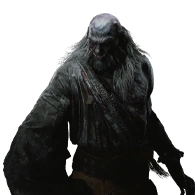
Acólito do Tigre
Efeito: Aumenta moderadamente o dano crítico.
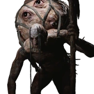
Daoísta Olho-Sangue
Efeito: Aumenta moderadamente o Mana Máximo.
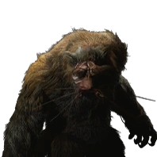
Tigre Enlouquecido
Efeito: Aumenta moderadamente o Ataque, mas reduz drasticamente a Vida Máxima.
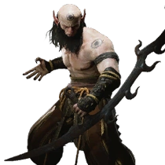
Patrulheiro da Montanha
Efeito: Aumenta ligeiramente a chance de crítico de ataques pesados em salto.
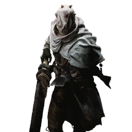
Yaksha Escravizado
Efeito: Concede uma quantidade moderada de Foco ao ser atingido.
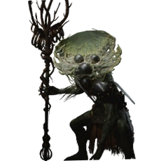
Homem-Fungo
Efeito: Aumenta moderadamente a velocidade de recuperação do Poder.
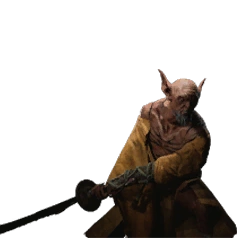
Monge da Lâmina
Efeito: Aumenta moderadamente o Ataque por curto período após derrotar um inimigo.
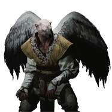
Ermitão Falcão
Efeito: Aumenta moderadamente o dano de gelo.
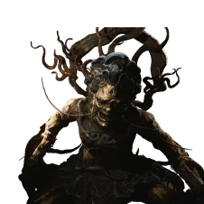
Morcego Apramana
Efeito: Ataques têm chance de congelar o inimigo.
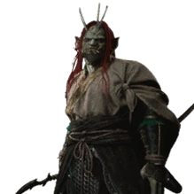
Yaksha de Cabelo Vermelho
Efeito: Aumenta moderadamente o dano de ataques pesados.
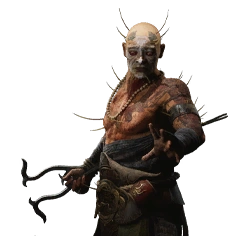
Não-Branco
Efeito: Aumenta moderadamente o dano de veneno e gelo.
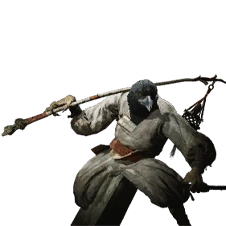
Adivinho Corvo
Efeito: Aumenta moderadamente a resistência ao frio.
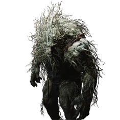
Ginseng Guai Velho
Efeito: Aumenta moderadamente a Vida Máxima dos lacaios invocados.
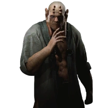
Não-Capaz
Efeito: Aumenta um pouco Ataque e Crítico, mas reduz drasticamente Mana Máxima.
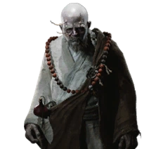
Não-Vazio
Efeito: Recupera moderada quantidade de Vigor ao ser atingido.
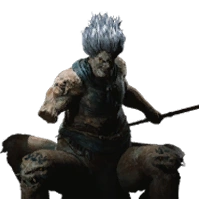
Vajra de Argila
Efeito: Aumenta moderadamente a resistência a queimaduras.
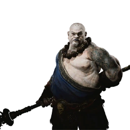
Não-Puro
Efeito: Aumenta moderadamente a Redução de Dano após usar Sólido como Rocha.
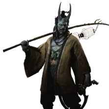
Portador de Lanterna
Efeito: Aumenta moderadamente a Vontade adquirida.
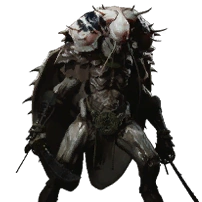
Capitão Besouro
Efeito: Aumenta moderadamente a resistência máxima.
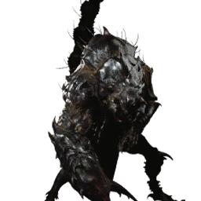
Príncipe Escorpião
Efeito: Aumenta moderadamente o dano de veneno.
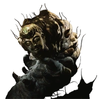
Verme-Armadura Ancião
Efeito: Crit chance aumenta levemente quando envenenado.
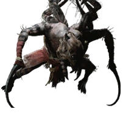
Aranha Marionete
Efeito: Reduz moderadamente a deterioração do Poder.
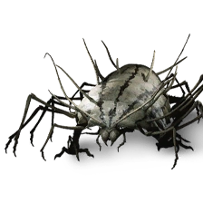
Guai Centopeia
Efeito: Aumenta ligeiramente a velocidade de movimento.
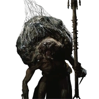
Carrapato Marionete
Efeito: Reduz bastante o custo de Mana para “A Pluck of Many”.
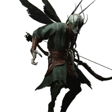
Guai Libélula
Efeito: +Qi por golpes, mas reduz muito Vida, Mana e Vigor.

Comandante Besouro
Efeito: Aumenta moderadamente resistência a venenos.
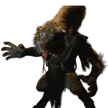
Xerife Serpente
Efeito: +Ataque, mas reduz consideravelmente a defesa.
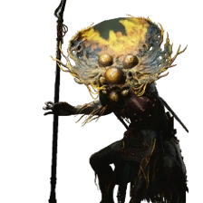
Mulher-Fungo
Efeito: +Muita Vida Máxima, mas reduz moderadamente o Vigor Máximo.

Brilho Esverdeado
Efeito: Recupera lentamente uma pequena quantidade de vida.
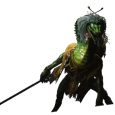
Herborista Serpente
Efeito: Recupera vida ao usar medicamentos.
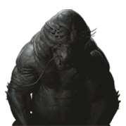
Pai das Pedras
Efeito: Pequeno aumento de chance e dano crítico.
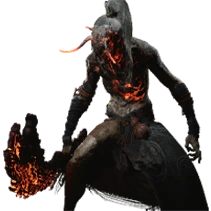
Cara-Queimado
Efeito: Aumenta moderadamente a velocidade de carregamento.
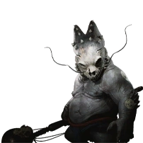
Tesouro Tartaruga
Efeito: Aumenta dano de ataques pesados que custam 3 ou 4 pontos de foco.
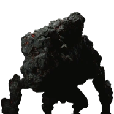
Chefe Sílex
Efeito: Aumenta ligeiramente resistência aos Quatro Flagelos.
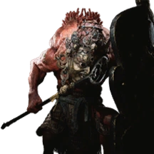
Rakshasa Terrestre
Efeito: Redução de dano moderada por curto período após ser atingido.
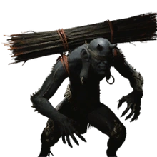
Nuvem Nebulosa
Efeito: Reduz moderadamente o custo de Mana do Passo das Nuvens.
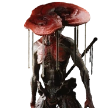
Guai Lingzhi de Nove Toucas
Efeito: Reduz moderadamente o custo de mana das magias de Misticismo.
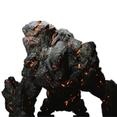
Vanguarda Sílex
Efeito: Aumenta dano de queimadura e resistência a queimaduras.
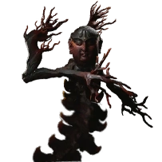
Mãe dos Flamingos
Efeito: Reduz moderadamente o tempo de recarga de todas as habilidades.
O Topo Domina o Fundo
Efeito: Aumenta muito a Defesa, mas reduz moderadamente o Ataque.
Governador Touro
Efeito: Aumenta moderadamente o dano de queimadura.

Baw-Baw-Lang-Lang
Efeito: Reduz moderadamente custo de Vigor para Saltos e Ataques em Salto.